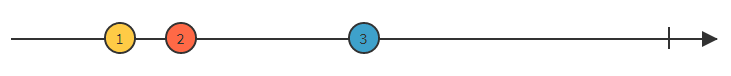
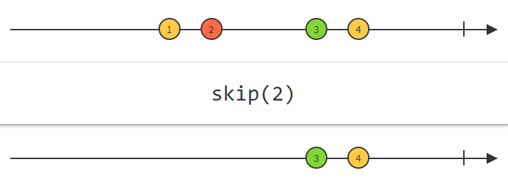

Reactive Extentions
RxJSData flow
RxJS is a library for reactive programming using Observables, to make it easier to compose asynchronous or callback-based codeObservable pattern
Pull
function myFunction(someVal){
return someVal*2
}
myFunction(5) // 10
function* myFunction() {
yield 5;
yield 10;
yield 15;
}
var generator = myFunction();
console.log(generator.next().value);
console.log(generator.next().value);
console.log(generator.next().value);
Push
let willIGetNewPhone = new Promise((resolve, reject) => {
setTimeout(() => {
resolve(true)
}, 1000)
});
willIGetNewPhone.then(value => {
console.log("Got a new phone!") //prints after 1 sec
});

| Single | Multiple | |
|---|---|---|
| Pull | Function | Iterator |
| Push | Promise | Observable |

var myObservable = new Observable(observer => {
observer.next(42); //"return" a value instantly
setTimeout(() => {
observer.next(200); // "return" a value asynchronously
}, 1000);
});
myObservable.subscribe(next => {
console.log(next)
});
promise.then(
successFunction
errorFunction
)
observable.subscribe(
nextFunction
errorFunction,
completeFunction
)
Observers subscribe to observables
let myObservable = new Observable(.....) //observable
myObservable.subscribe(....) // Observer
myObservable.subscribe(....) // Observer
myObservable.subscribe(....) // Observer
var myObservable = new Observable(observer => {
observer.next(42);
setTimeout(() => {
observer.next(200);
}, 1000);
});
myObservable.subscribe(next => {
console.log("S1:" + next)
});
myObservable.subscribe(next => {
console.log("S2:" + next)
});
var myObservable = new Observable(observer => {
observer.next(42);
setTimeout(() => {
observer.next(200);
}, 1000);
}).share();
myObservable.subscribe(next => {
console.log("S1:" + next)
});
myObservable.subscribe(next => {
console.log("S2:" + next) //42 is never received
});
observable.subscribe(nextHandler, errorHandler, completionHandler)
let subscription = observable.subscribe(......)
subscription.unsubscribe()
let myObservable = Observable.of(1, 2, 3);
myObservable.subscribe(next => {
console.log(next) //1, 2, 3
})
Observable.fromEvent(window, 'mousemove')
.subscribe(next => {
console.log("Mouse movement")
});
let myObservable = Observable.interval(300);
myObservable.subscribe(next => {
console.log(next) //0, 1, 2, 3....
})
const myObservable = new Observable(observer => {
let counter = 0;
let interval = setInterval(() => {
observer.next( counter++ );
}, 300);
return () => { clearInterval(interval) }
});
myObservable.subscribe(next => {
console.log(next) // 0, 1, 2, 3.....
})

myObservable/mySubject
.
.subscribe
.map()
.filter()
.skip()
.delay()
.throttleTime()
.debounceTime()
.switchMap()
.retry()
.catch()
.take(number) 

let observable = Observable.interval(1000);
let subscription = observable
.take(5)
.subscribe(next => {
console.log(next)
});
Observable.interval(5000)
.switchMap(() => {
return this._http.get("www.ulv.no")
.catch(error => Observable.empty())
})
.subscribe(data => {
console.log(data);
})
Observable.fromEvent(window, 'mousemove')
.debounceTime(1000)
.subscribe(next => {
console.log("No movment for one sec!")
});
Shared by default
var myObservable = new Observable(observer => {
observer.next(42);
});
let mySubject = new Subject();
mySubject.subscribe(next => {
console.log(next)
});
mySubject.next(42);
setTimeout(() => {
mySubject.next(500);
}, 1000);
Works really similar to EventEmitter
Import { of } from 'rxjs'
of(😏, 😊, 😋)
of(😏, 😊, 😋)
.map(.....)
of(😏, 😊, 😋)
.pipe(
.map(.....)
)
Having global operators is bad
Can treeshake
Linters can be more helpfull
Can easily create custom operators
import 'rxjs/add/operator/map';
import 'rxjs/add/observable/of';
import { map, filter } from 'rxjs/operators';
import { of } from 'rxjs';
And a 3 more thats rarly used
Like: rxjs/testing, rxjs/webSocet and rxjs/ajax
.throwIfEmpty(
() => new Error('no data passed this operator')
)
catch() => catchError()
do() => tap()
finally() => finalize()
switch() => switchAll()
throw() => throwError()
fromPromise() => from()
Use them staticly now like combineLatest(stream1, stream2)
npm install -g rxjs-tslint
rxjs-5-to-6-migrate -p src/tsconfig.app.json
Reactive Extentions
RxJS
www.github.com/JGH153
reactivex.io
reactivex.io/rxjs